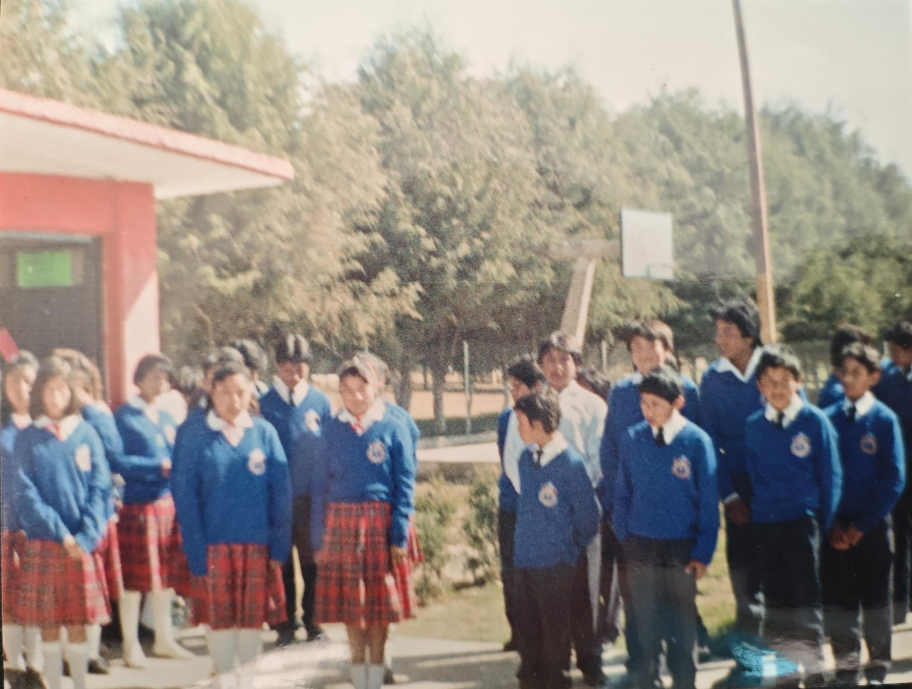
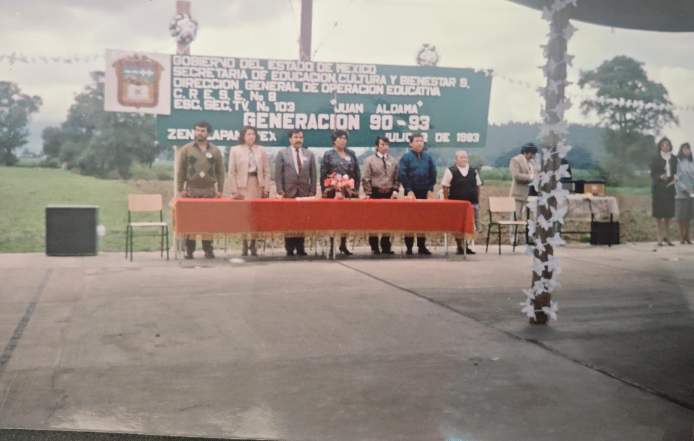
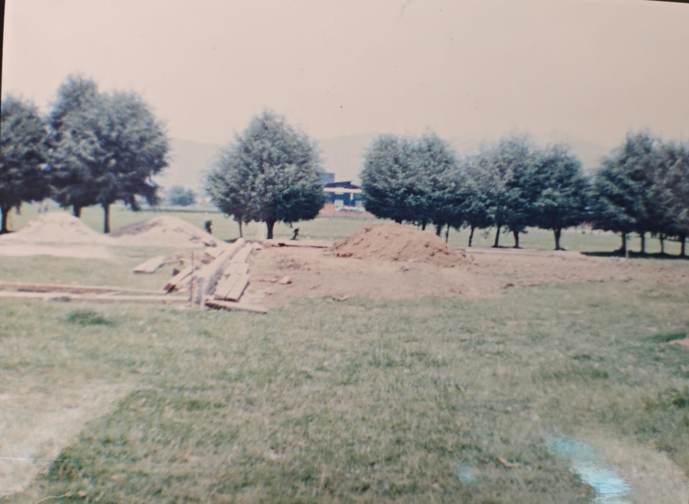
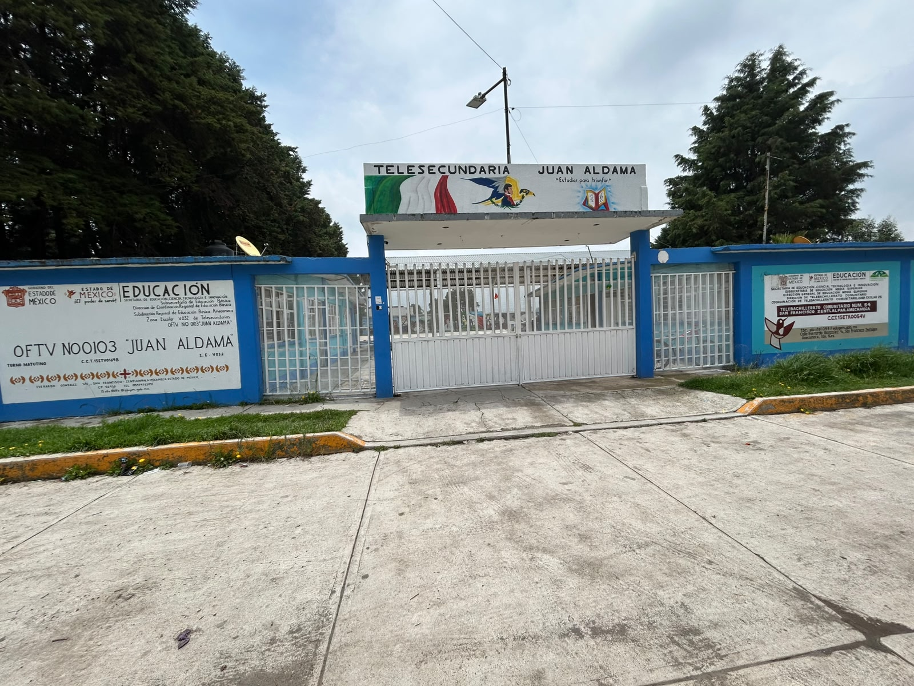

1983
10 alumnos
144 alumnos
Más de 40 años
Los inicios de la escuela telesecundaria en México se remontan a la década de los años sesenta, periodo en el que las transformaciones sociales, políticas y culturales tuvieron un gran impacto en el ámbito educativo nacional.
Después de una fase experimental mediante circuito cerrado, en 1968 se implementó oficialmente el modelo de Telesecundaria utilizando la televisión como herramienta educativa para ampliar el acceso a la educación secundaria en todo el país.
La Escuela Telesecundaria No. 0103 "Juan Aldama" inició actividades en el año de 1983 en la comunidad de San Francisco Zentlalpan, Amecameca, Estado de México.
Sus primeras clases se impartieron en una casa particular con un solo docente y un grupo de primer grado integrado por 10 alumnos.
La matrícula escolar continuó creciendo y se incorporaron dos docentes más, permitiendo contar con un maestro para cada grado escolar.
Durante este periodo las actividades continuaron realizándose en la vivienda prestada generosamente por el señor Víctor Tamaríz.


La escuela fue trasladada a la colonia Santa Cruz, donde se utilizaron espacios que originalmente eran construidos por integrantes de la liga de fútbol local.
Gracias al apoyo de la comunidad, estos espacios fueron habilitados para impartir clases mientras se gestionaba un edificio escolar propio.
Finalmente, en febrero de 1990 fue entregado oficialmente el edificio escolar, construido con la participación de la Presidencia Municipal, padres de familia y habitantes de la comunidad.

Actualmente la institución atiende a 144 alumnos distribuidos en tres grupos de primer grado, dos grupos de segundo grado y tres grupos de tercer grado.
La telesecundaria mantiene una matrícula superior a los 100 estudiantes, consolidándose como una de las principales instituciones educativas de la región.

El plantel cuenta con ocho aulas, aula de cómputo, dirección escolar, salón de maestros, recepción, tienda escolar y bodega.
También dispone de espacios deportivos y un área techada utilizada para ceremonias cívicas, eventos culturales y actividades recreativas.
Una de las fortalezas de la institución es la participación activa de los padres de familia, quienes colaboran mediante jornadas de mantenimiento, limpieza, pintura y mejoramiento de las instalaciones.
Este trabajo conjunto ha permitido conservar la escuela en buenas condiciones y fortalecer el sentido de pertenencia de toda la comunidad educativa.
La Telesecundaria No. 0103 "Juan Aldama" promueve la puntualidad, disciplina, responsabilidad y formación integral de sus estudiantes.
A través de actividades deportivas, académicas, culturales y de convivencia, la institución continúa formando generaciones de jóvenes comprometidos con su comunidad y preparados para enfrentar los retos del futuro.